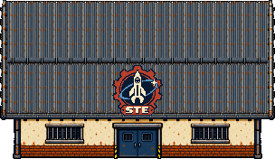
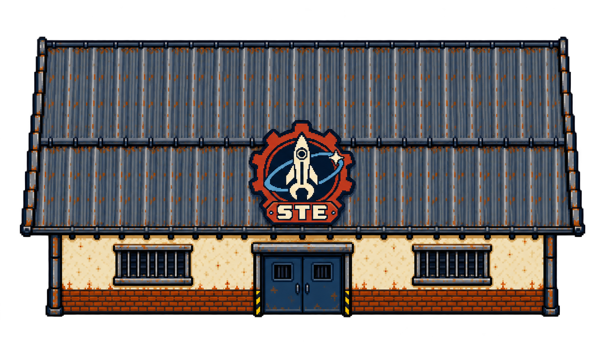
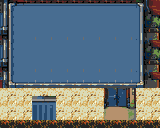
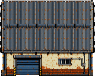
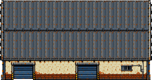
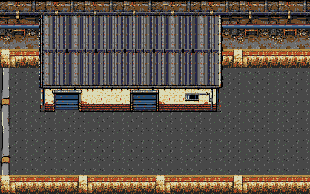
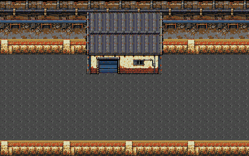
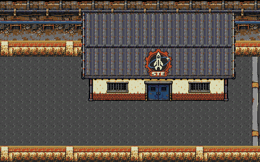

Fase 12 · Três blocos até o sindicato
Escolte Dinorah da saída da fábrica até a sala dos trabalhadores do estaleiro. O cenário segue o método das fases 3 e 6: três bases completas, repetição com encaixes e objetos de campo independentes.
Acesso: FASE TESTE → Campanha → 12. A escolta mantém os desfechos: Dinorah viva leva à 13A; sua morte com Damião vivo leva à 13B.
Mundo: 3.072×320 pxBases: 3 de 512×320 pxProps: 11Reserva: 618/640 tiles
Casa do sindicato STE · integrada no jogo
Prédio completo com cobertura metálica, paredes recuadas sob o beiral, duas janelas gradeadas, entrada central e o logo original STE acima da porta. Fachada e emblema convertidos para a paleta nativa; a cobertura e os dois vãos laterais compartilham tiles exatos para caber na reserva existente.

Asset completo · 304×176 px Captura real da ROM atual · NTSC, com Dinorah visível. Os indicadores dela se sobrepõem à fachada. A câmera acompanha Damião; parte superior do telhado sai do enquadramento.
Captura real da ROM atual · NTSC, com Dinorah visível. Os indicadores dela se sobrepõem à fachada. A câmera acompanha Damião; parte superior do telhado sai do enquadramento.Mesma posição e colisão no fim da fase 12. A escolta mantém os desfechos 13A/13B. Atlas estático com 618/640 tiles, 19.776 bytes de gráficos e 22 tiles livres; sem aumentar a reserva de VRAM.
Ver a referência visual aprovada

Fonte ImageGen · Prompt
Investigação: elemento sobre a janela esquerda
O “!” e a barra amarela pertencem à Dinorah. A captura anterior coincidiu com o piscar da invulnerabilidade usada na preparação do teste: o corpo ficou oculto e os indicadores permaneceram visíveis. A base de colisão dela está em x2776/y208, abaixo do prédio, que termina em y200. A fachada exportada não contém esses ícones. Há sobreposição dos indicadores com a parede; esta investigação não mudou seu posicionamento nem a ROM.
 Corpo oculto pelo piscar; indicadores continuam visíveisMesmo local, com o corpo visível na rua
Corpo oculto pelo piscar; indicadores continuam visíveisMesmo local, com o corpo visível na rua Reposicionamento isolado de teste: os indicadores acompanham Dinorah
Reposicionamento isolado de teste: os indicadores acompanham DinorahRelatório da investigação
Construção refeita
O anexo repetido e a oficina do início receberam cobertura metálica corrugada com estrutura e desgaste, portão de carga, reboco e janela gradeada. A nova fonte foi criada com ImageGen integrado e convertida em materiais nativos repetíveis; portas, janelas e conduíte permanecem peças completas. Mesmos tamanhos, posições e colisões.

Antes · telhado azul chapado
Agora · novo anexo de serviço
Mesma linguagem aplicada à oficina do inícioFonte ImageGen · Prompt exato
Três bases, seis posições no mapa
A + B + B + B + B + C

A · Início · Saída de serviço da fábrica; arquitetura exclusiva e limite lateral esquerdo.
B · Meio repetível · Muro industrial, anexo, asfalto e limite inferior. Quatro cópias idênticas; os obstáculos são separados.
C · Final · Sindicato completo, área de aproximação e limite lateral direito.As quatro instâncias de B usam a mesma imagem. Caminhões, caixas e barris mudam de posição, mantendo o ritmo do cenário e os desvios da escolta. Cada base contém área superior, limite inferior e chão; somente A e C fecham as laterais externas.
Cenário completo com os elementos
Novo anexo e oficina em escala nativa, com materiais de cobertura repetíveis e aberturas completas. Sindicato substituído pelo prédio completo com o logo STE e fachada simétrica. Caminhão da fase 9, caixas e barris da fase 6 e asfalto da fase 7 preservados. Nenhum prédio inteiro foi deformado para caber no mapa. As cinco emendas de fundo são idênticas pixel a pixel.
Ver apenas a montagem A+B+B+B+B+C, sem objetos de campo
Percurso e colisões
Quatro caminhões alternam posições ao norte e ao sul. Caixas e barris ocupam pontos secundários; não há prédios no meio da rua. O percurso mede aproximadamente 2.984 px, com base de 16×16 e margem extra de 8 px em cada lado. As 6.109 posições livres da malha são conectadas. O limite inferior continua visível ao descer com a câmera.
Conferência no jogo
 Fachada da saída da fábrica · captura NTSC da ROM
Fachada da saída da fábrica · captura NTSC da ROM Fachada do anexo no corredor · captura NTSC da ROM
Fachada do anexo no corredor · captura NTSC da ROM Caminhão e faixa de circulação · captura NTSC da ROM
Caminhão e faixa de circulação · captura NTSC da ROM Carga no corredor de serviço · captura NTSC da ROM
Carga no corredor de serviço · captura NTSC da ROM Sindicato com emblema STE · captura NTSC da ROM
Sindicato com emblema STE · captura NTSC da ROM Passagem pela emenda entre blocos · captura NTSC da ROM
Passagem pela emenda entre blocos · captura NTSC da ROM36 enquadramentos comparados com os pixels exportados em NTSC/PAL; seis fachadas completas, emblema STE e corpo do jogador conferidos abaixo do HUD; colisões de todas as faces acessíveis; cinco emendas percorridas por controle; pausa com restauração dos gráficos. As bordas naturais da câmera podem recortar uma construção durante a passagem; os módulos do cenário conservam telhados e bases completos.
Travessia completa da escolta
Dinorah chegou com 100 HP: 82,87 s em NTSC e 81,34 s em PAL. Percurso por controle após isolamento de inimigos e invencibilidade de preparação, sem escrita de posição/progresso durante a execução. Também passaram morte da escolta e prioridade da derrota de Damião.
Memória e desempenho
618 tiles exatos = 19.776 bytes de gráficos residentes; 22 tiles livres na reserva de 640. Mapa de 30.720 bytes e paleta de 32 bytes na ROM. Atlas estático: sem heap de cache do cenário, sem imagem RGBA de 3.072×320 carregada no console e sem substituição aproximada de tiles.
Limite de jogo preservado: três inimigos e quatro tiros por grupo. Carga por 20 s em cada setor, com IA ativa e patrulha do jogador, vida protegida, Dinorah pausada e reposição apenas dos tiros inativos:
| Setor | NTSC · FPS | PAL · FPS |
|---|
| Saída da fábrica | 59.85 | 50.00 |
| Caminhão inferior | 59.90 | 50.00 |
| Caminhão superior | 59.85 | 50.00 |
| Sindicato | 59.90 | 50.00 |
Há pequenas perdas de quadros em NTSC. A defesa parada com vida normal perdeu a escolta em 16,73 s NTSC e Damião em 25,18 s PAL; esse ensaio não conclui a escolta em combate nem certifica dificuldade humana. Sobrecargas de 8/16 inimigos excedem o limite da fase e têm quedas maiores; os números estão no relatório. Hardware físico não testado.
ROM local: 42c959eed7284b967c03ba14f4c7e8c96da4a4e516b4868ba9e4bbb58690ccd8. Revisão integrada localmente; a aceitação visual do usuário permanece aberta.